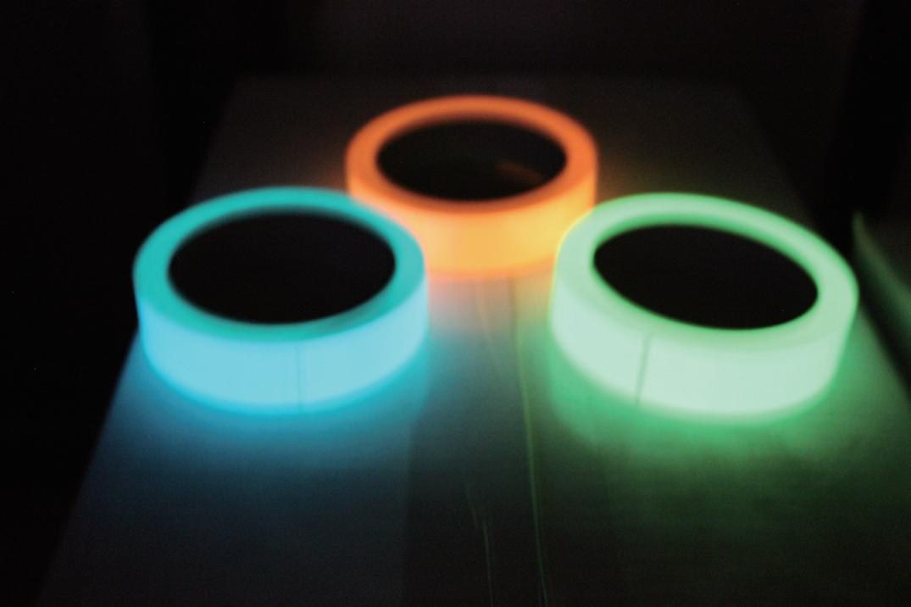
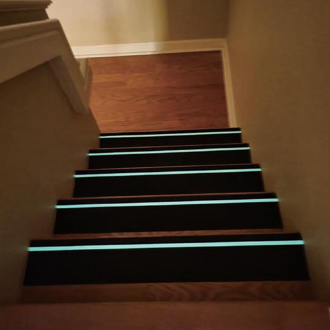
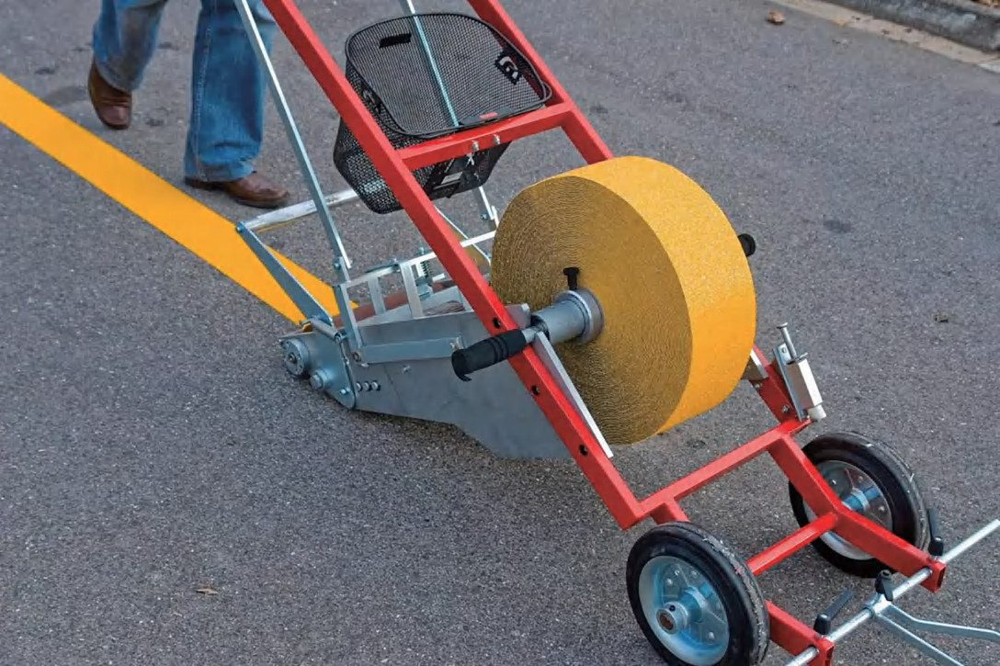
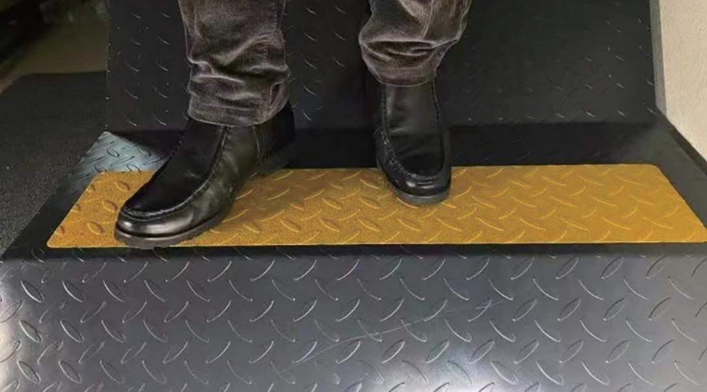
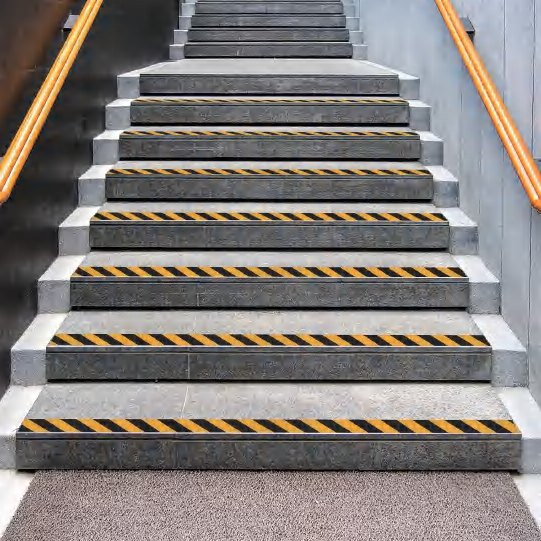
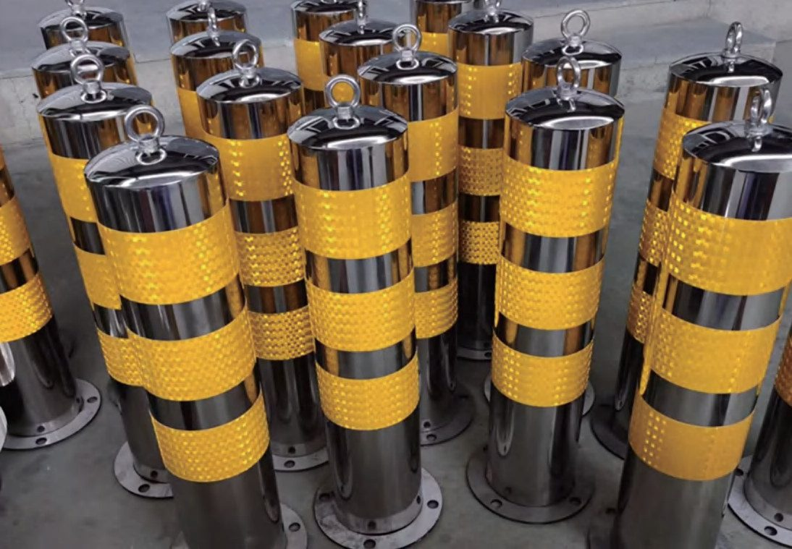
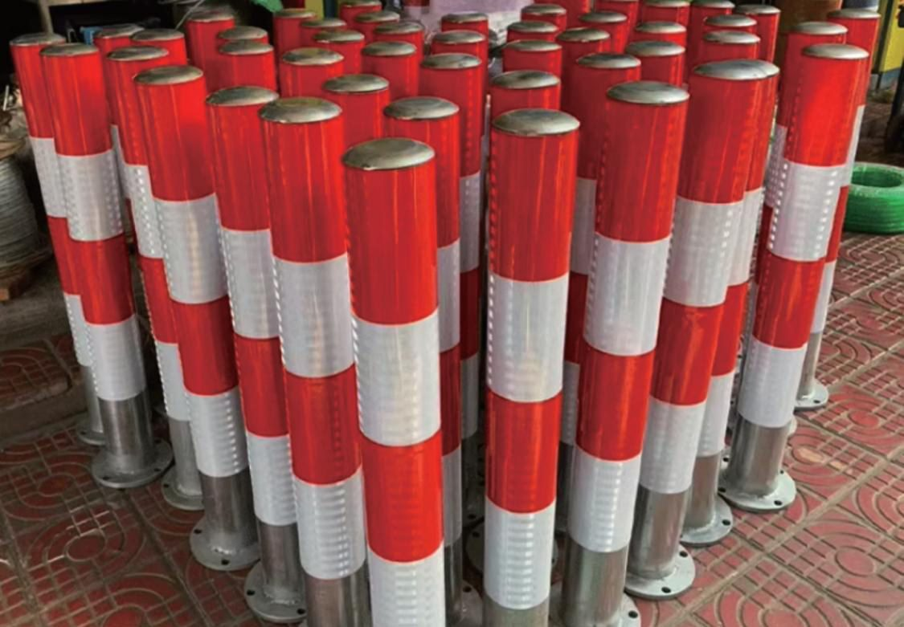
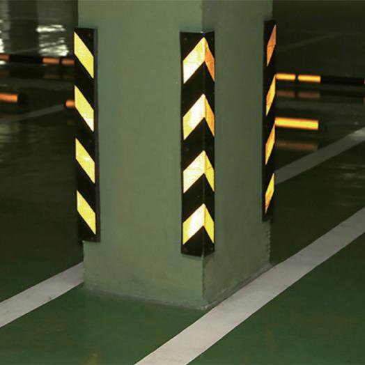
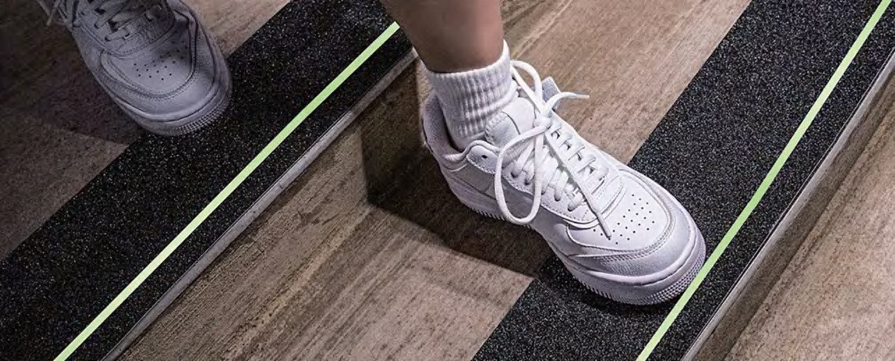
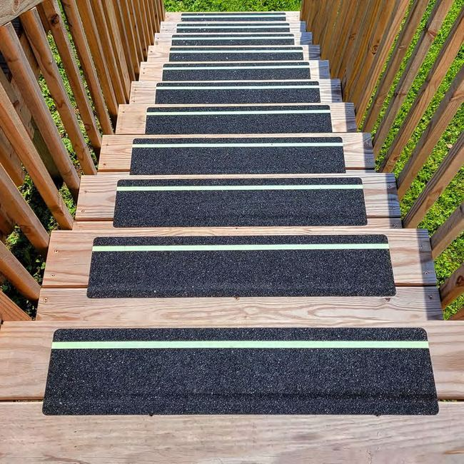

Vạch rõ luồng, bậc hết trơn, tối vẫn thấy lối.
Bốn loại băng cho bốn chuyện khác nhau trong xưởng: kẻ vạch, chống trơn, phản quang, dạ quang.
Mất điện, vạch dạ quang vẫn chỉ đường
Băng dạ quang hút sáng khi có đèn và tự phát sáng khi tối, để người trong xưởng thấy mép bậc thang và lối thoát hiểm.
Ảnh: nhà sản xuất, hai cảnh khác nhau.

Có đènMất điệnBăng kẻ vạch sàn PVC
Phân làn người và xe, khoanh vùng pallet, tủ cứu hỏa, chỗ đỗ xe nâng tay. Nhiều màu để chia khu theo 5S.
- Dán xong dùng được ngay, không chờ sơn khô, không dừng xưởng lâu
- Hợp lối đi chính, khu kệ, khu sản xuất
- Chỗ xe nâng quay đầu liên tục mòn nhanh hơn: xem tại chỗ trước khi chọn
 Ảnh: nhà sản xuất
Ảnh: nhà sản xuất

Băng chống trơn
Bề mặt hạt nhám, dán lên mũi bậc, dốc, sàn hay ướt, bậc sàn thép gân, bệ máy.
- Mũi bậc cầu thang lên văn phòng, sàn lửng
- Dốc ra cửa kho, chỗ hay dính nước mưa
- Phải dán trên mặt sạch, khô, theo hướng dẫn của hãng mới bám chắc

Ảnh: nhà sản xuất
Băng phản quang
Sáng lên khi có đèn chiếu vào. Hợp với cột ở khúc cua, cột chắn, lối vào hầm, bãi xe.
- Bọc góc cột ở đường xe
- Quấn cột chắn ở bãi đỗ, cổng
- Cần có nguồn sáng chiếu vào mới thấy. Chỗ tối hẳn dùng băng dạ quang

Ảnh: nhà sản xuất

Băng dạ quang
Hút sáng khi đèn bật, tự phát sáng một thời gian sau khi tắt đèn. Không cần điện, dây hay công tắc.
- Mép bậc cầu thang lên văn phòng, sàn lửng
- Lối từ khu sản xuất ra cửa thoát hiểm
- Không thay được đèn sự cố hay biển thoát hiểm theo quy định. Là lớp phòng hờ cuối cùng
 Ảnh: nhà sản xuất
Ảnh: nhà sản xuất

Mỗi màu một nghĩa. Cả xưởng đọc giống nhau.
Bảng tham khảo theo cách làm 5S phổ biến. Mỗi nhà máy nên chốt một bảng màu riêng và dán ở cửa xưởng.
Dùng ở khu nào trong kho
Mỗi khu cần loại khác nhau. Bấm khu để xem cả rào, băng và cách bố trí ở khu đó.
Video thử của hãng
Sạch, khô, dán, lăn.
Băng bong là do dán sai cách, hiếm khi do băng. Thiên Khôi nhận dán tại xưởng.
Làm sạch, để khô
Bụi, dầu, nước dưới băng là chỗ băng bong đầu tiên.
Dán, miết đều
Bóc lót từ từ, miết từ giữa ra mép.
Lăn ru-lô
Lăn lại sau khi dán để băng bám chắc vào sàn.
Dán trọn gói
Thiên Khôi nhận dán tại xưởng. Bảo hành:
Băng dán sàn nhà xưởng: chọn theo nền, dán cho bám, biết giới hạn
Băng dán sàn nhà xưởng chỉ bền khi chọn loại hợp với nền và dán đúng cách. Bên dưới là cách chọn theo mặt sàn và lưu lượng xe, các bước dán theo hướng dẫn của nhà sản xuất, và những việc băng không làm được.
Chọn theo mặt sàn và lưu lượng xe
Cùng một cuộn băng keo kẻ vạch sàn có thể bám chắc trên sàn epoxy sạch và bong sớm trên bê tông trần còn bụi. Trước khi chọn, xem ba điều: mặt sàn là gì, sàn có hay ướt hoặc dính dầu không, và xe gì chạy qua vạch.
- Sàn epoxy, sàn sơn còn tốt: lau sạch dầu là dán được
- Bê tông trần: hút bụi, lau, để khô hẳn. Chỗ bê tông bở, rỗ cần xử lý trước
- Chỗ bánh xe nâng xoay tại chỗ: mép băng bị kéo nhiều nhất, cân nhắc dời vạch hoặc dùng sơn đúng điểm đó
- Dốc ra cửa kho, sàn ngoài mái che: chịu nắng mưa, cần hỏi thông số dùng ngoài trời của từng loại trước khi chọn
Bốn loại băng và những lần dùng nhầm
Lỗi hay gặp là dùng nhầm loại băng cho chỗ dán. Băng phản quang dán ở cầu thang không có đèn nào chiếu vào thì không sáng. Băng dạ quang dán ở góc đèn tắt suốt ngày thì không được nạp sáng, đến lúc mất điện cũng không có gì để phát.
Băng chống trơn cầu thang nhà xưởng nên dán ở mũi bậc, nơi chân đặt xuống đầu tiên và mòn bóng trước. Băng phản quang và băng dạ quang thoát hiểm có thể dùng cùng một khu: phản quang cho cột ở đường xe có đèn xe chiếu tới, dạ quang cho mép bậc và lối ra.
Dán thế nào cho bám
Băng bong thường bắt đầu từ mép và từ đầu đoạn. Hướng dẫn dán của nhà sản xuất dặn mấy điểm:
- Bóc lớp lót từng đoạn ngắn, vừa bóc vừa miết chặt xuống sàn, không bóc cả đoạn dài rồi mới dán
- Trời dưới 20°C thì hơ nóng mặt băng bằng máy sấy
- Lăn ru-lô cao su sau khi dán để đuổi bọt khí, nhất là dọc hai mép
Băng dán hay sơn kẻ vạch
Băng dán xong là đi được, đổi bố trí thì gỡ ra dán lại. Sơn hợp với nền mới làm, diện tích lớn, bố trí ít thay đổi, nhưng cần thời gian chờ khô và phải dừng khu đó. Nhiều xưởng dùng cả hai: sơn cho lối chính cố định, băng cho chỗ hay đổi như khu để pallet. Bài vạch sơn hay băng dán so sánh kỹ hơn và nói rõ giới hạn của từng cách.
Giới hạn của băng
- Vạch trên sàn không chặn được xe. Đoạn người đi sát đường xe vẫn cần rào lối đi bộ
- Băng dạ quang cần đèn chiếu đủ lâu để nạp sáng trước khi mất điện
- Màu vạch sàn là thông lệ, chưa thấy quy định bắt buộc chung. Xem bảng màu vạch sàn nhà xưởng
- Băng dạ quang sáng mạnh nhất ngay sau khi tắt đèn rồi mờ dần, nên lối thoát hiểm cần được chiếu sáng đủ lâu mỗi ngày để băng tích sáng.
- Khu hay đổi bố trí nên chọn loại băng dễ gỡ, để khi kẻ lại vạch không mất công cạo keo trên sàn.
| Chỗ dán | Loại băng | Cần chuẩn bị |
|---|---|---|
| Lối đi bộ, khoanh vùng pallet | Băng kẻ vạch PVC | Hút bụi, lau sạch dầu |
| Mũi bậc, dốc, bậc thép gân | Băng chống trơn | Tẩy dầu, để khô hẳn |
| Cột ở khúc cua, bãi xe | Băng phản quang | Phải có đèn chiếu tới |
| Mép bậc, lối ra khi mất điện | Băng dạ quang | Phải có đèn nạp sáng trước đó |
Nguồn: hướng dẫn dán băng trong video của nhà sản xuất băng (bóc lót từng đoạn, hơ nóng khi dưới 20°C, lăn ru-lô), đọc qua hồ sơ nguồn nội bộ Thiên Khôi ngày 28/10/2026.
Nên kẻ vạch bằng sơn hay băng dán?
Tuỳ chỗ. Băng dán sàn nhà xưởng dán xong đi được ngay, hợp với khu hay đổi bố trí như khu để pallet và chỗ không dừng xưởng lâu được. Sơn hợp với nền mới, diện tích lớn, bố trí ít thay đổi. Nhiều xưởng dùng cả hai. Bài vạch sơn hay băng dán so sánh chi tiết và nói rõ giới hạn của từng cách.
Băng dán sàn nhà xưởng có dùng được ở lối xe nâng chạy nhiều không?
Được ở đoạn xe chạy thẳng. Chỗ bánh xe nâng xoay tại chỗ, phanh gấp hoặc quay đầu liên tục thì mép băng chịu kéo nhiều nhất và mòn trước. Ở những điểm đó cần xem tại chỗ để quyết định dời vạch, đổi loại băng hoặc sơn đúng điểm đó. Gửi ảnh khúc cua qua trang đặt khảo sát, hoặc xem khu đường xe nâng.
Dán băng trên nền bê tông cần chuẩn bị gì?
Hút bụi, lau sạch dầu, để sàn khô hẳn. Chỗ bê tông bở, rỗ cần xử lý trước, vì băng chỉ bám chắc khi lớp mặt sàn chắc. Khi dán, bóc lớp lót từng đoạn, vừa bóc vừa miết, rồi lăn ru-lô cao su để đuổi bọt khí. Trời lạnh thì hơ nóng mặt băng theo hướng dẫn của nhà sản xuất. Xem video dán băng.
Băng chống trơn dán lên bậc thép gân có bám không?
Bám được nếu mặt thép sạch dầu và khô hẳn trước khi dán. Bậc thép gân trong xưởng thường dính dầu máy, nên cần tẩy dầu kỹ, để khô rồi mới dán, sau đó lăn ru-lô cho băng ôm sát mặt bậc. Chỗ lên xuống sàn thao tác, bệ máy còn có loại tấm chống trơn riêng. Xem băng chống trơn và khu cầu thang.
Băng dạ quang sáng được bao lâu khi mất điện?
Băng sáng mạnh nhất ngay sau khi tắt đèn rồi mờ dần. Sáng được bao lâu tuỳ loại băng và lượng ánh sáng băng đã hút trước đó, nên lối thoát hiểm cần được chiếu sáng đủ mỗi ngày. Khi khảo sát, Thiên Khôi xem đèn ở lối thoát hiểm rồi mới gợi ý loại băng, xem thêm băng dạ quang.
Màu vạch sàn có quy định bắt buộc không?
Chúng tôi chưa thấy quy định bắt buộc chung về màu vạch sàn nhà xưởng ở Việt Nam. Bảng màu đang dùng là thông lệ theo cách làm 5S. Mỗi nhà máy tự chốt bảng màu riêng trong nội quy để cả xưởng đọc màu giống nhau. Xem bảng màu vạch sàn và bản in ở trang tài liệu.
Khi đổi bố trí xưởng, gỡ băng có để lại keo không?
Còn tuỳ loại băng, nền sàn và thời gian băng đã nằm trên sàn. Chúng tôi chưa đưa kết luận chung khi chưa có thông số gỡ của nhà sản xuất. Trước khi đổi bố trí, nên thử gỡ một đoạn ngắn ở góc khuất. Nếu kho đổi bố trí thường xuyên, hãy nói trước khi đặt khảo sát. Xem thêm bài vạch sơn hay băng dán.

Ba bước để kho của anh chị có đề xuất theo từng khu
Bắt đầu từ vài tấm ảnh chụp bằng điện thoại. Chúng tôi xem ảnh, gọi lại, rồi hẹn xuống kho đúng giờ ca đang chạy.
- 1Gửi ảnh vị trí
Chụp chỗ hay va hoặc hay trơn, ghi chiều dài ước lượng và loại xe chạy qua.
- 2Nhận gợi ý ban đầu
Thiên Khôi xem ảnh, gọi lại và gợi ý nhóm rào hoặc loại băng cho từng chỗ.
- 3Khảo sát tại chỗ
Hẹn đúng giờ ca đang chạy để đo, xem nền sàn, rồi gửi đề xuất cho từng khu.
Đã nhận yêu cầu
Bản mẫu: form này chưa gửi đi đâu. Trên web thật, Thiên Khôi gọi lại theo số anh chị để lại.